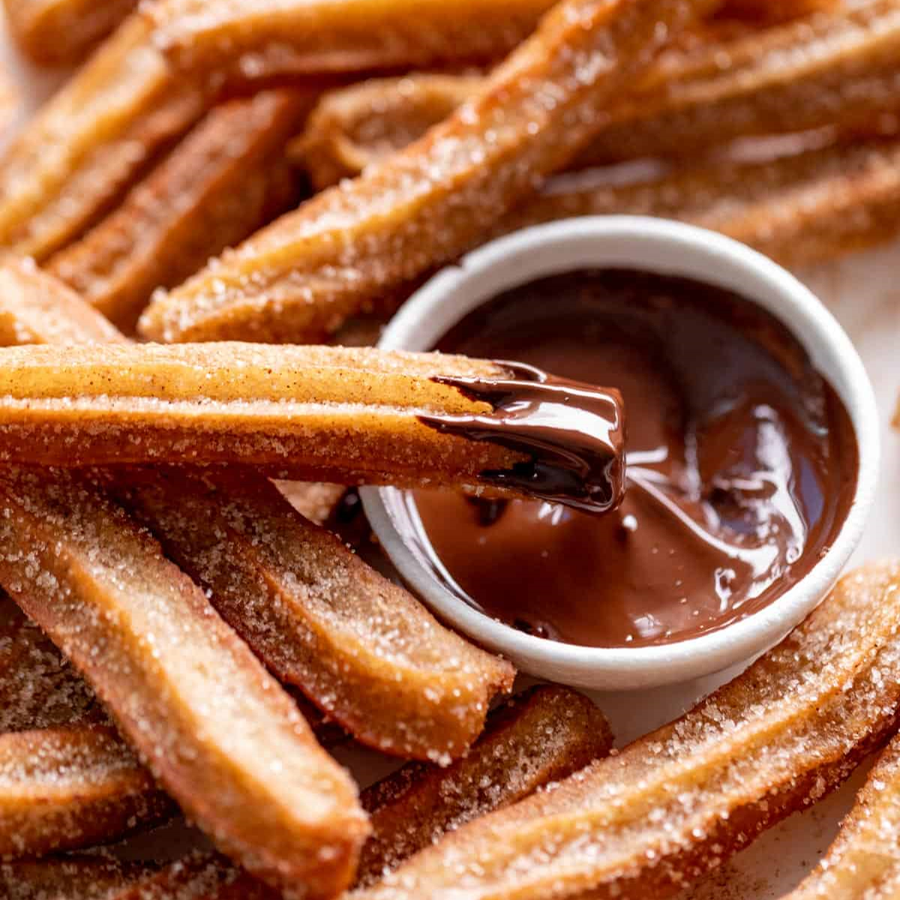

A churros története
A churros eredete még ma sem teljesen ismert, azonban van egy elfogadott történet, amit sok kutatás alátámaszt. A churros eredetileg a kínai youtiao süteményból származik. A Portugálok áthozták magukkal a receptet Kínából Európába, és saját ízlésük szerint változtattak rajta. A finom desszert gyorsan elterjedt Spanyolországban és picivel később Dél-Amerikában, majd világszerte.
